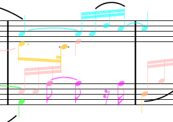

Flash: Audiveris 4.2 is out!
Discover
its new text OCR, new ART symbol description,
new PDF support, new adaptive binarization, etc.
Read
how to use Audiveris on all representative Recordare examples.
Download
installers for Windows and Linux platforms.
Audiveris
is an open-source Optical Music Recognition
software which processes the image of a music sheet to
automatically provide symbolic music information in
MusicXML standard.
This opens the door to many tools (score editor, MIDI
sequencer, ...) which can use this symbolic data for such
tasks as edit, play, print, re-publish, transpose, query,
etc.
Main features:
- Printed music as input (no handwritten music)
- Standard music notation (no tablatures yet)
- Input formats: PDF, JPG, PNG, TIFF, BMP, ...
- Output format:
MusicXML version 3
- Any number of pages per score, of parts per system,
of staves per part, of voices per measure
- Internal neural network trainable by end user
- Available on Windows and Linux
- GNU GPL V2 license

News
Support
Examples
MakeMusic
site provides representative examples of PDF scores and
MusicXML data.
This
Wiki details how Audiveris can be used to
process each of these examples.
Development
Audiveris is developed in Java, and invokes Google Tesseract
(C++) for text OCR.
Project components (source code, binaries, issues tracking, forum)
are available on
Kenai.
Help wanted for
- Coupling with MuseScore
to edit, print, play, etc
- Cloud computing to provide "OMR as a service"
- Automated evaluation of transcription results
- Microedition features to enable crowd-sourcing
Evolutions
- Test campaign on large data set?
- Missing features: cue notes, endings, etc?
- Ability to move & resize virtual glyphs?
- Map/reduce for scores with lots of pages?
- Text OCR extended to musical symbols?
- Support for low-quality scans?
See details on dedicated
Wiki
and share your expectations on Audiveris
forum!